India Consumption Pulse — 11 September 2026
A focused view of price trends, valuations, market breadth and pullbacks across India's consumption indices.
Contents
- Market at a Glance
- Nifty India Consumption
- Nifty FMCG
- Nifty Consumer Durables
- Market Breadth by Index
- Sources
- Disclaimer
Market at a Glance
A compact comparison of indices.
- Free-float market cap: The value of shares available for public trading, measured in ₹ lakh crore. Each value includes its source date in the index section below.
- 3Y P/E position: Compares today's P/E with the index's own three-year history. A low percentile is near its three-year low; a high percentile is near its three-year high.
- Stocks up today: Shows market breadth—the percentage of stocks in the index that rose today.
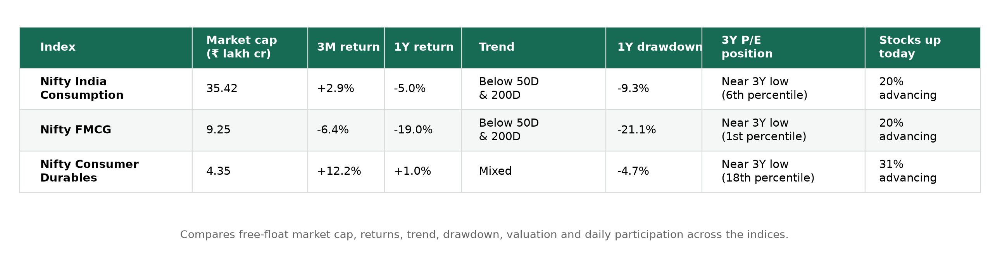
Nifty India Consumption
What it represents: Companies across industries whose businesses are primarily tied to domestic consumption.
Close: 11,460.60 · Day change: -0.47% · 50D MA 11,878.85 (-3.52%) · 200D MA 11,647.40 (-1.60%) · Free-float market cap: ₹35.42 lakh crore (as of 11 September 2026)
Price
Price return shows how much the index rose or fell over each period. Current read — 3M: +2.9% · 1Y: -5.0% · 3Y: +35.7%.
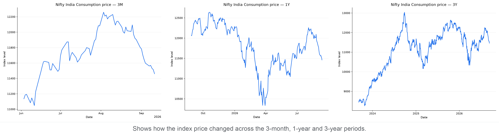
P/E
P/E compares index price with constituent earnings; the percentile shows where today's valuation sits within each period.
3M: 37.32 versus 38.88 median, 11th percentile (lower end)
1Y: 37.32 versus 39.29 median, 18th percentile (lower end)
3Y: 37.32 versus 41.58 median, 6th percentile (lower end)
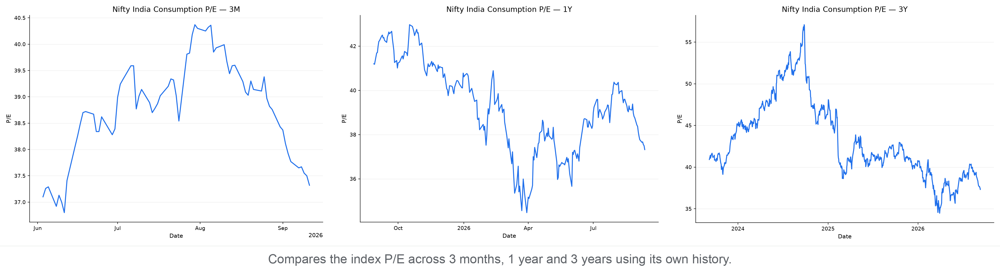
P/B
P/B compares index price with constituent book value; the percentile shows where today's P/B sits within each period.
3M: 6.81 versus 7.32 median, 1st percentile (lower end)
1Y: 6.81 versus 7.76 median, 1st percentile (lower end)
3Y: 6.81 versus 8.38 median, 1st percentile (lower end)
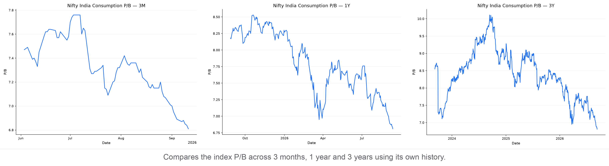
Moving Averages
The 50-day average shows the shorter trend and the 200-day average shows the longer trend. Current read — -3.5% versus the 50-day average; -1.6% versus the 200-day average; the 50-day is above the 200-day (bullish alignment).
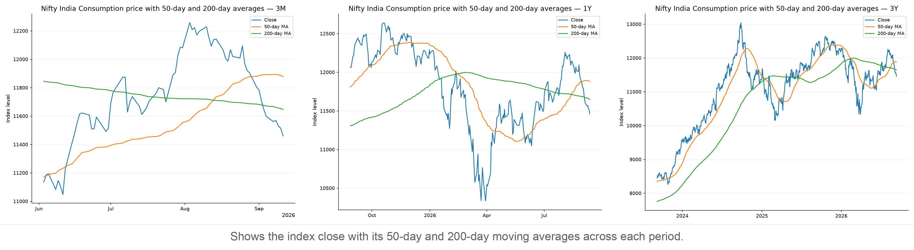
Support & Resistance
Zones use confirmed five-bar swing points clustered into 0.5% price bands; distances are measured from today's close.
3M: support 11,205–11,263 (1.7% below); resistance 11,551–11,661 (0.8% above)
1Y: support 11,256–11,315 (1.3% below); resistance 11,551–11,661 (0.8% above)
3Y: support 11,292–11,421 (0.3% below); resistance 11,476–11,661 (0.1% above)
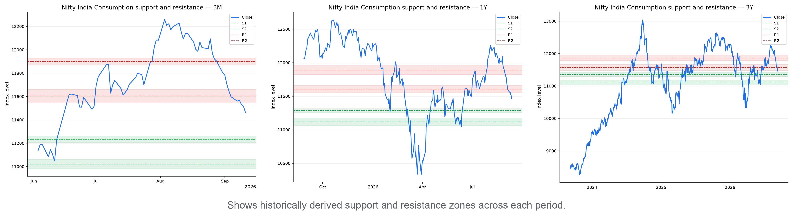
Drawdown
Drawdown is the percentage below the highest close reached within each chart's own period. Current pullback in context:
3M: Now 6.5% below peak · Worst 6.5% · At this level or lower on 1% of 72 trading days
1Y: Now 9.3% below peak · Worst 18.2% · At this level or lower on 26% of 259 trading days
3Y: Now 12.1% below peak · Worst 22.1% · At this level or lower on 25% of 747 trading days
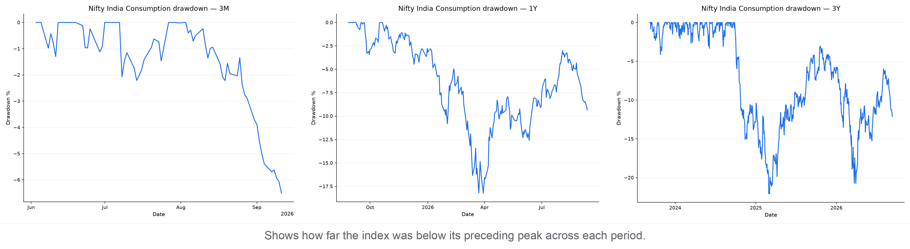
Nifty FMCG
What it represents: Companies selling frequently purchased household and personal-consumption products.
Close: 45,053.75 · Day change: -0.29% · 50D MA 48,144.82 (-6.42%) · 200D MA 50,286.84 (-10.41%) · Free-float market cap: ₹9.25 lakh crore (as of 11 September 2026)
Price
Price return shows how much the index rose or fell over each period. Current read — 3M: -6.4% · 1Y: -19.0% · 3Y: -13.1%.
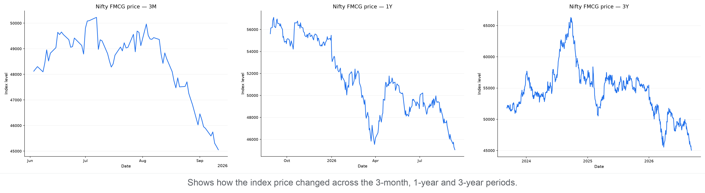
P/E
P/E compares index price with constituent earnings; the percentile shows where today's valuation sits within each period.
3M: 31.26 versus 33.66 median, 1st percentile (lower end)
1Y: 31.26 versus 36.44 median, 1st percentile (lower end)
3Y: 31.26 versus 42.61 median, 1st percentile (lower end)
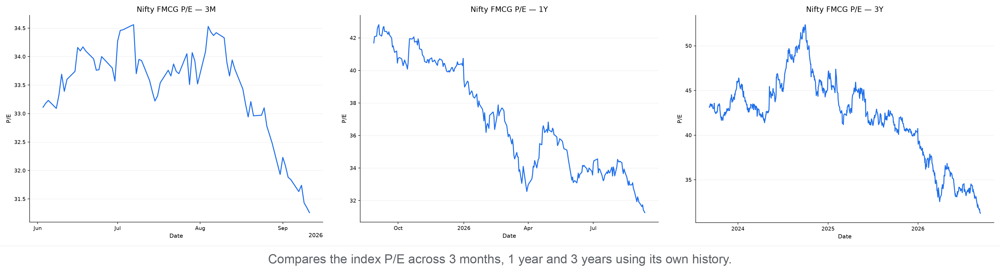
P/B
P/B compares index price with constituent book value; the percentile shows where today's P/B sits within each period.
3M: 7.52 versus 8.25 median, 1st percentile (lower end)
1Y: 7.52 versus 9.07 median, 1st percentile (lower end)
3Y: 7.52 versus 10.80 median, 1st percentile (lower end)
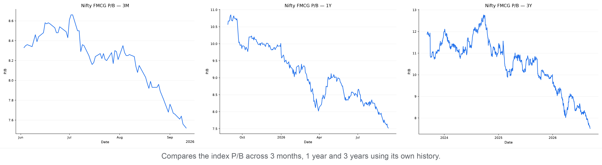
Moving Averages
The 50-day average shows the shorter trend and the 200-day average shows the longer trend. Current read — -6.4% versus the 50-day average; -10.4% versus the 200-day average; the 50-day is below the 200-day (bearish alignment).
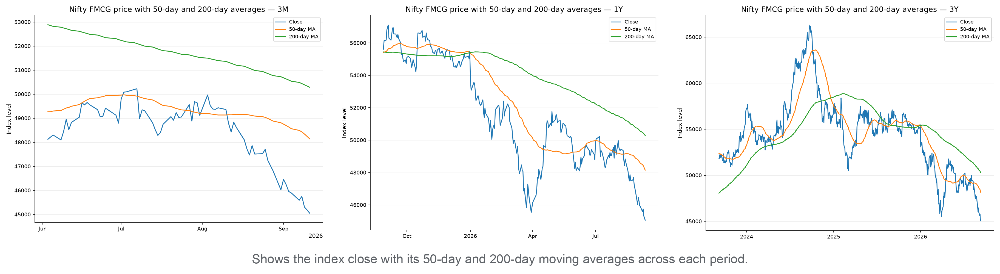
Support & Resistance
Zones use confirmed five-bar swing points clustered into 0.5% price bands; distances are measured from today's close.
3M: no confirmed swing-zone support was found below the current close; resistance 47,026–47,457 (4.4% above)
1Y: no confirmed swing-zone support was found below the current close; resistance 45,222–45,447 (0.4% above)
3Y: no confirmed swing-zone support was found below the current close; resistance 45,222–45,447 (0.4% above)
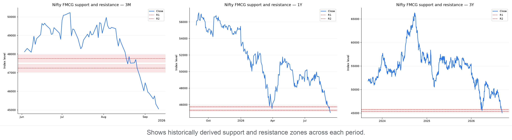
Drawdown
Drawdown is the percentage below the highest close reached within each chart's own period. Current pullback in context:
3M: Now 10.3% below peak · Worst 10.3% · At this level or lower on 1% of 72 trading days
1Y: Now 21.1% below peak · Worst 21.1% · At this level or lower on 0% of 259 trading days
3Y: Now 32.1% below peak · Worst 32.1% · At this level or lower on 0% of 747 trading days
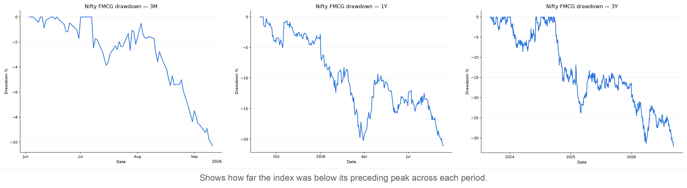
Nifty Consumer Durables
What it represents: Companies producing longer-lasting consumer products such as appliances and electronics.
Close: 38,900.80 · Day change: -0.30% · 50D MA 39,638.17 (-1.86%) · 200D MA 37,125.88 (+4.78%) · Free-float market cap: ₹4.35 lakh crore (as of 11 September 2026)
Price
Price return shows how much the index rose or fell over each period. Current read — 3M: +12.2% · 1Y: +1.0% · 3Y: +33.2%.
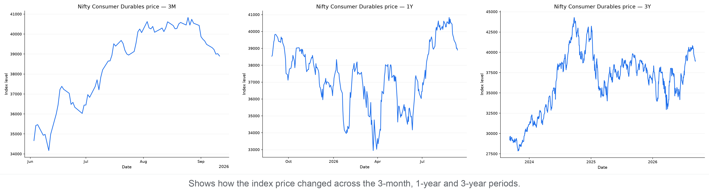
P/E
P/E compares index price with constituent earnings; the percentile shows where today's valuation sits within each period.
3M: 63.35 versus 66.14 median, 10th percentile (lower end)
1Y: 63.35 versus 63.78 median, 44th percentile (below the middle)
3Y: 63.35 versus 69.54 median, 18th percentile (lower end)
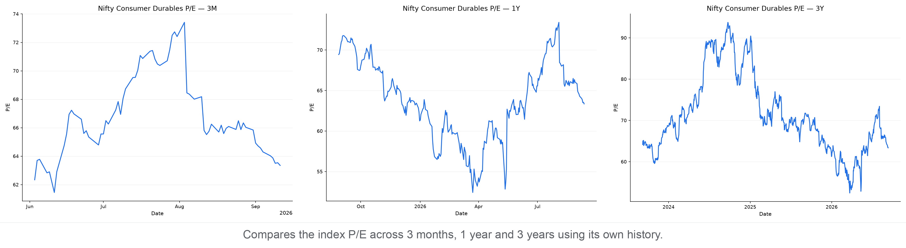
P/B
P/B compares index price with constituent book value; the percentile shows where today's P/B sits within each period.
3M: 11.18 versus 12.18 median, 6th percentile (lower end)
1Y: 11.18 versus 12.19 median, 12th percentile (lower end)
3Y: 11.18 versus 12.21 median, 30th percentile (below the middle)
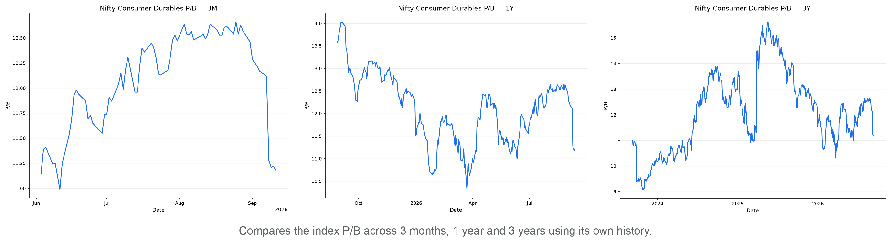
Moving Averages
The 50-day average shows the shorter trend and the 200-day average shows the longer trend. Current read — -1.9% versus the 50-day average; +4.8% versus the 200-day average; the 50-day is above the 200-day (bullish alignment).
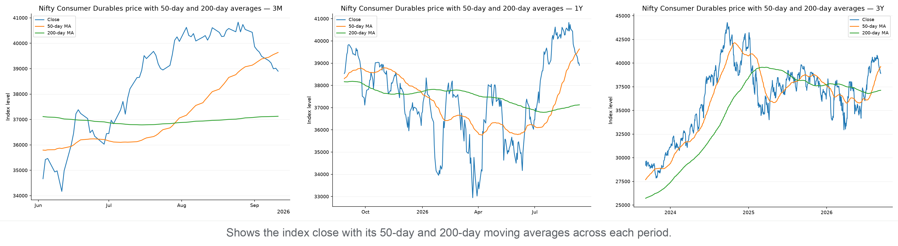
Support & Resistance
Zones use confirmed five-bar swing points clustered into 0.5% price bands; distances are measured from today's close.
3M: support 38,410–38,605 (0.8% below); resistance 39,095–39,290 (0.5% above)
1Y: support 38,410–38,790 (0.3% below); resistance 39,018–39,453 (0.3% above)
3Y: support 38,268–38,825 (0.2% below); resistance 38,945–39,386 (0.1% above)
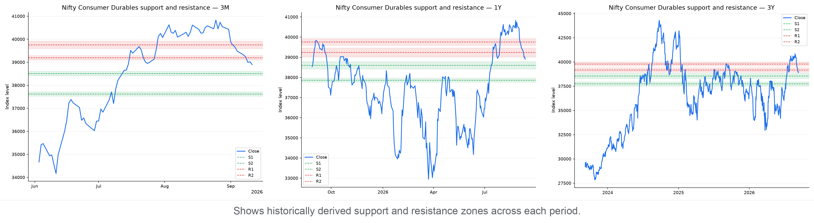
Drawdown
Drawdown is the percentage below the highest close reached within each chart's own period. Current pullback in context:
3M: Now 4.7% below peak · Worst 4.7% · At this level or lower on 1% of 72 trading days
1Y: Now 4.7% below peak · Worst 17.3% · At this level or lower on 59% of 259 trading days
3Y: Now 12.2% below peak · Worst 25.6% · At this level or lower on 45% of 747 trading days
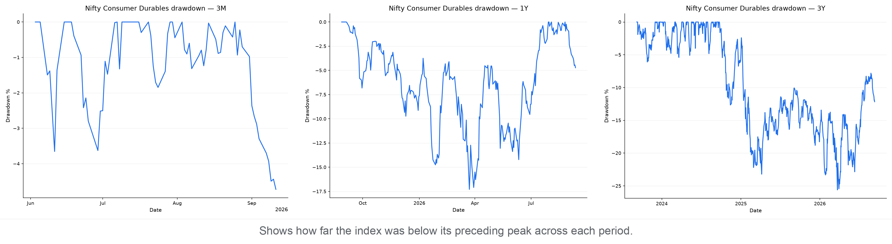
Market Breadth by Index
Market breadth counts how many constituents rose, fell, or were unchanged. It shows whether an index move has broad participation or is being driven by relatively few stocks; it is useful confirmation, not a prediction.
- Nifty India Consumption: 6 advanced, 24 declined, 0 unchanged — broadly negative (A/D ratio 0.25).
- Nifty FMCG: 3 advanced, 12 declined, 0 unchanged — broadly negative (A/D ratio 0.25).
- Nifty Consumer Durables: 4 advanced, 9 declined, 0 unchanged — broadly negative (A/D ratio 0.44).
Breadth Snapshot
Green shows advancing constituents, red declining constituents, and grey unchanged constituents.
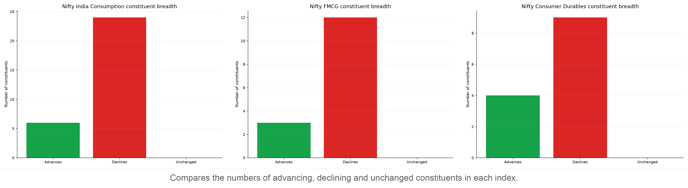
Sources
- NSE India
- Index price history: https://www.nseindia.com/api/historicalOR/indicesHistory
- Free-float market capitalization: https://www.nseindia.com/index-tracker/NIFTY%2050
- Index snapshot and market breadth: https://www.nseindia.com/api/allIndices
- Nifty Indices
- Historical P/E and P/B data: https://www.niftyindices.com/BackPage/getpepbHistoricaldataDBtoString
- Yahoo Finance
- Nifty FMCG market data (^CNXFMCG): https://finance.yahoo.com/quote/^CNXFMCG